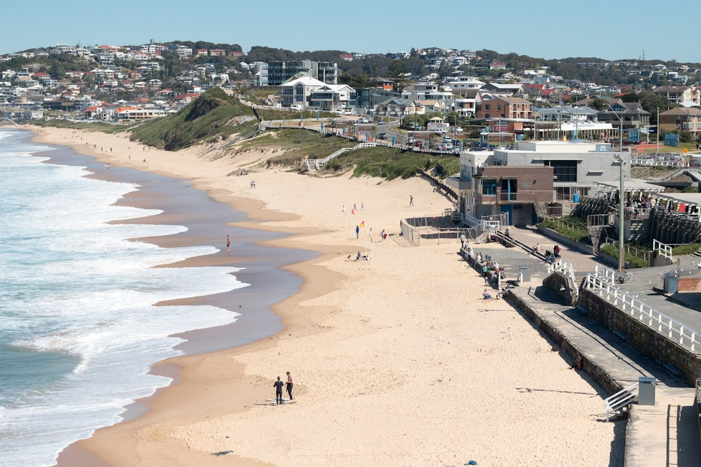

For Newcastle retaining wall projects, the key checks are wall height, boundary distance, load, drainage and site conditions. The source page says NSW exempt development is limited to walls that meet every standard, including a maximum 600mm height, at least 1m from each lot boundary and 2m from another retaining wall. Structural walls are referenced against AS 4678, with drainage, gravel and geotextile backfill treated as part of the wall scope.
For homeowners comparing retaining wall builders newcastle options, the practical decision is whether the block needs a simple landscape wall, an engineered structure or an approval pathway before excavation starts.
Retaining Wall Builders Newcastle Explained
Retaining Walls Newcastle frames the first decision around the site itself: soil, height, budget, access and what the wall has to hold back. That is a better starting point than picking a material from a photo, because the same looking boundary wall can behave very differently on a coastal block, a ridge block or a tight inner city site.
The published service list separates concrete sleeper, timber sleeper, Besser block, rock and boulder, gabion, drainage systems, engineered walls and repairs. Those categories are useful as a quote checklist. Ask which system is being proposed, why it suits the slope and whether the quote includes excavation, backfill, drainage and disposal assumptions.
For a small garden terrace, timber or sleeper systems may be discussed. For taller walls, rendered finishes or load bearing locations, the conversation may move toward core filled block, concrete sleeper systems or engineered retaining walls. Where water movement is a concern, gabion, rock and drainage details need specific attention rather than a one line allowance.
Who This Applies To
This guide applies to Newcastle and Lake Macquarie fringe property owners planning a new wall, replacing a failing wall or preparing a renovation that depends on level ground. It is most useful before a quote is accepted, because wall height, boundary position, site access and approval status can change the scope before any machine reaches the block.
- Homeowners building garden terraces, boundary retaining or level changes.
- Owners replacing cracked, bulging or failing retaining walls.
- Renovators who need site grading or slope support before other work can proceed.
- Commercial or development projects where retaining, earthworks and drainage sit inside a wider civil package.
For a related plain English overview of retaining wall choices in the same market, the Newcastle retaining walls guide gives another crawlable reference point without changing the practical checks: height, soil, water, access and approvals.
Approval Questions To Resolve Early
The source page states that in NSW a retaining wall is exempt development only if it clears every standard in the SEPP Exempt and Complying Development Codes 2008. It lists three figures to check before work starts: 600mm maximum height, 1m minimum distance from each lot boundary and 2m minimum distance from any other retaining wall.
If the wall falls outside those standards, the page points to either a Complying Development Certificate or a Development Application pathway. It also says structural walls are designed to AS 4678. A quote should therefore state whether the wall is being treated as exempt, whether certification is required and who is responsible for confirming the pathway with council or a private certifier.
Useful questions to ask before accepting a scope include whether the wall is carrying a surcharge, whether a driveway, building or neighbouring structure affects the design, and whether engineering drawings are included. If a builder cannot explain the approval assumption, the price is not yet comparable with another quote.
Drainage Is Part Of The Structure
The published page treats drainage as a standard inclusion, not an optional extra. It describes agricultural drain, gravel and geotextile behind every wall, and says drainage is the detail that stops most residential wall failures. That makes drainage a quote comparison item, not a late upgrade.
For Newcastle blocks, the page names different ground conditions, including coastal dune sand at Stockton, reactive clay ridges at Adamstown Heights and New Lambton Heights, estuarine flats at Mayfield, and former colliery ground at Wallsend and Lambton. Those examples should not be used as a suburb checklist. They show why the wall system and drainage detail need to follow the site assessment.
Ask where water will collect, where it will discharge and what backfill specification is allowed for. If a quote simply states retaining wall construction without naming drainage, gravel or geotextile, request a clearer written scope before comparing it with a more complete proposal.
Comparing Quotes Without Chasing A Generic Price
The source page says retaining wall pricing depends on the site, not a phone estimate. That is a sensible caution for this category because excavation access, wall height, material, drainage, approval work and replacement complexity can sit behind the same short description: build a retaining wall.
Give each contractor the same inputs: suburb or postcode, rough wall height, whether it is new work or replacement, signs of cracking or bulging, access limits and whether the wall supports a driveway, garden, boundary or future renovation. A written quote should set out the wall system, drainage inclusion, approval assumption and any engineering requirement.
Do not treat the cheapest number as comparable until the scope is comparable. A concrete sleeper wall with galvanised H posts, a timber garden wall, a core filled block wall and a gabion wall solve different problems. The useful comparison is not material alone, but whether the proposed system suits the soil, height, finish and water conditions on the block.
- Describe the site. Record the suburb, rough wall height, slope, access limits and whether the job is new construction or replacement.
- Check approval assumptions. Ask whether the wall is exempt, needs a Complying Development Certificate or needs a Development Application.
- Compare drainage scope. Confirm agricultural drain, gravel and geotextile are included where the wall design requires them.
- Match system to conditions. Ask why the proposed material suits the soil, height, finish, load and water conditions on the block.
- Get the scope in writing. Compare quotes only after wall system, drainage, engineering and approval responsibilities are written down.
| Decision | Useful when | Quote question |
|---|---|---|
| Concrete sleeper system | Sloping residential blocks where a durable modular wall is proposed | Are galvanised H posts, drainage and backfill specified? |
| Timber sleeper wall | Low garden terracing or non structural level changes described in the source page | Is the wall height and use within a simple landscape scope? |
| Core filled block wall | Taller engineered retaining or rendered finishes on tight blocks | Are engineering, approval pathway and reinforcement included? |
| Gabion or rock wall | Sites where a rugged, free draining finish is proposed | How will surface water and backfill be managed? |
| Repair or replacement | Bulging, cracked or failing existing walls | Is the assessment limited to repair, or is full replacement required? |
Common questions
Does every retaining wall in NSW need approval? No. The source page says a wall is exempt development only if it clears every standard in the NSW exempt development rules. It lists 600mm maximum height, 1m from each lot boundary and 2m from another retaining wall as key checks.
Which retaining wall system is best for a Newcastle block? There is no single best system. The source page says the system should be matched to soil, height and budget, with options including concrete sleeper, timber, Besser block, sandstone, boulder and gabion walls.
Should drainage appear in the quote? Yes, according to the source page, drainage should be included from the first quote. It names agricultural drain, gravel and geotextile backfill as part of the wall detail.
When should engineering be discussed? Engineering should be discussed when a wall sits outside exempt development standards, carries a surcharge or is structural. The source page references AS 4678 for structural retaining walls.
This guide covers retaining wall system choice, approval questions, drainage scope and quote comparison for Newcastle and nearby Lake Macquarie fringe projects.